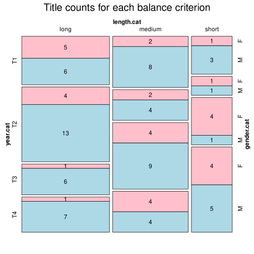

Click on a column heading to sort. Click on a text identifier to read the text (may not work in older browsers).
| Identifier | Encoding | Pages | Words | (Size) | Date (Slot) | Title | Author | Sex | Reprints |
|---|---|---|---|---|---|---|---|---|---|
| DEU001 |
eltec-1 | 1737 | 322371 | (long) | 1845 (T1) | Weisse Sclaven oder die Leiden des Volkes | Willkomm, Ernst Adolf (1810-1886) | M | low |
| DEU002 |
eltec-1 | 243 | 66067 | (medium) | 1863 (T1) | Der Lehnhold | Auerbach, Berthold (1812-1882) | M | low |
| DEU003 |
eltec-1 | 253 | 89800 | (medium) | 1859 (T1) | Der Pedlar | Ruppius, Otto (1819-1864) | M | low |
| DEU004 |
eltec-1 | 269 | 56702 | (medium) | ? (T1) | Nürnberg. Zweiter Band | Otto, Louise (1819-1895) | F | low |
| DEU005 |
eltec-1 | 765 | 216063 | (long) | 1855 (T1) | Der Sonnenwirt | Kurz, Hermann (1813-1873) | M | high |
| DEU006 |
eltec-1 | 200 | 60551 | (medium) | 1957 (T1) | Fragment eines Romans | Weerth, Georg (1822-1856) | M | low |
| DEU007 |
eltec-1 | 232 | 82220 | (medium) | 1841 (T1) | Die Mappe meines Urgroßvaters | Stifter, Adalbert (1805-1868) | M | high |
| DEU008 |
eltec-1 | 135 | 31603 | (short) | 1863 (T1) | Der Lautenbacher | Auerbach, Berthold (1812-1882) | M | low |
| DEU009 |
eltec-1 | 278 | 97300 | (medium) | 1859 (T1) | Das Vermächtnis des Pedlars | Ruppius, Otto (1819-1864) | M | low |
| DEU010 |
eltec-1 | 288 | 61819 | (medium) | 1848 (T1) | Lydia | Aston, Louise (1814-1871) | F | low |
| DEU011 |
eltec-1 | 828 | 344948 | (long) | 1977 (T1) | Soll und Haben | Freytag, Gustav (1816-1895) | M | high |
| DEU012 |
eltec-1 | 157 | 27975 | (short) | 1847 (T1) | Aus dem Leben einer Frau | Aston, Louise (1814-1871) | F | high |
| DEU013 |
eltec-1 | 272 | 76008 | (medium) | 1856 (T1) | Barfüßele | Auerbach, Berthold (1812-1882) | M | low |
| DEU014 |
eltec-1 | 273 | 123077 | (long) | 1840 (T1) | Vittoria Accorombona | Tieck, Ludwig (1773-1853) | M | high |
| DEU015 |
eltec-1 | 321 | 176011 | (long) | 1840 (T1) | Die Günderode | Arnim, Bettina von (1785-1859) | F | high |
| DEU016 |
eltec-1 | 505 | 183061 | (long) | 1846 (T1) | Die Regulatoren in Arkansas. Aus dem Waldleben Amerikas | Gerstäcker, Friedrich (1816-1872) | M | low |
| DEU017 |
eltec-1 | 120 | 41879 | (short) | 1843 (T1) | Die Narrenburg | Stifter, Adalbert (1805-1868) | M | unspecified |
| DEU018 |
eltec-1 | 705 | 105286 | (long) | 1845 (T1) | Anna | Schopenhauer, Adele (1797-1849) | F | low |
| DEU019 |
eltec-1 | 172 | 58315 | (medium) | 1846 (T1) | Zwei Schwestern | Stifter, Adalbert (1805-1868) | M | unspecified |
| DEU020 |
eltec-1 | 608 | 131733 | (long) | 1846 (T1) | Sibylle | Hahn-Hahn, Ida Gräfin von (1805-1880) | F | low |
| DEU021 |
eltec-1 | 330 | 111473 | (long) | 1843 (T1) | Jenny | Lewald, Fanny (1811-1889) | F | low |
| DEU022 |
eltec-1 | 202 | 108645 | (long) | 1844 (T1) | Clemens Brentanos Frühlingskranz | Arnim, Bettina von (1785-1859) | F | high |
| DEU023 |
eltec-1 | 132 | 43934 | (short) | 1841 (T1) | Feldblumen | Stifter, Adalbert (1805-1868) | M | high |
| DEU024 |
eltec-1 | 3477 | 894081 | (long) | 1858–1861 (T1) | Der Zauberer von Rom | Gutzkow, Karl (1811-1878) | M | low |
| DEU025 |
eltec-1 | 503 | 81837 | (medium) | 1855 (T1) | Der Amerika-Müde | Kürnberger, Ferdinand (1823-1879) | M | low |
| DEU026 |
eltec-1 | 424 | 96548 | (medium) | 1879 (T2) | Auch Einer 2 | Vischer, Friedrich Theodor (1807-1887) | M | high |
| DEU027 |
eltec-1 | 178 | 76679 | (medium) | 1876 (T2) | Bozena | Ebner-Eschenbach, Marie von (1830-1916) | F | high |
| DEU028 |
eltec-1 | 382 | 108606 | (long) | (T2) | Die letzte Reckenburgerin | François, Louise von (1817-1893) | F | unspecified |
| DEU029 |
eltec-1 | 253 | 97670 | (medium) | Juli/August 1879 (T2) | Alte Nester | Raabe, Wilhelm (1831-1910) | M | low |
| DEU030 |
eltec-1 | 867 | 307798 | (long) | ? (T2) | Die verlorene Handschrift | Freytag, Gustav (1816-1895) | M | high |
| DEU031 |
eltec-1 | 362 | 135524 | (long) | Oktober 1969 – März 1870 (T2) | Der Schüdderump | Raabe, Wilhelm (1831-1910) | M | high |
| DEU032 |
eltec-1 | 211 | 83873 | (medium) | 1874 (T2) | Jürg Jenatsch | Meyer, Conrad Ferdinand (1825-1898) | M | high |
| DEU033 |
eltec-1 | 129 | 37948 | (short) | 1855 (T2) | Die Geschichte meines Urgroßvaters | François, Louise von (1817-1893) | F | low |
| DEU034 |
eltec-1 | 397 | 98067 | (medium) | 1879 (T2) | Auch Einer 1 | Vischer, Friedrich Theodor (1807-1887) | M | high |
| DEU035 |
eltec-1 | 744 | 269471 | (long) | Januar- September 1878 (T2) | Vor dem Sturm | Fontane, Theodor (1819-1898) | M | high |
| DEU036 |
eltec-1 | 838 | 287409 | (long) | 1879/80 (T2) | Der grüne Heinrich2 [Zweite Fassung] | Keller, Gottfried (1819-1890) | M | low |
| DEU037 |
eltec-1 | 412 | 148356 | (long) | 1871 1872 (T2) | Das Heideprinzeßchen | Marlitt, Eugenie (1825-1887) | F | low |
| DEU038 |
eltec-1 | 447 | 166341 | (long) | Nov. 1863 – März 1864 (T2) | Der Hungerpastor | Raabe, Wilhelm (1831-1910) | M | high |
| DEU039 |
eltec-1 | 622 | 225971 | (long) | 1861 (T2) | Problematische Naturen. Erste Abtheilung | Spielhagen, Friedrich (1823-1911) | M | low |
| DEU040 |
eltec-1 | 331 | 118440 | (long) | 1866 1867 (T2) | Goldelse | Marlitt, Eugenie (1825-1887) | F | high |
| DEU041 |
eltec-1 | 297 | 105854 | (long) | 1868 (T2) | Das Geheimnis der alten Mamsell | Marlitt, Eugenie (1825-1887) | F | low |
| DEU042 |
eltec-1 | 436 | 223715 | (long) | 1865 (T2) | Die Mandanenwaise | Möllhausen, Balduin (1825-1905) | M | low |
| DEU043 |
eltec-1 | 772 | 324738 | (long) | 1869 (T2) | Hammer und Amboß | Spielhagen, Friedrich (1823-1911) | M | low |
| DEU044 |
eltec-1 | 774 | 265086 | (long) | 1876 (T2) | Kampf um Rom | Dahn, Felix (1834-1912) | M | high |
| DEU045 |
eltec-1 | 980 | 337846 | (long) | 1855 1865–1867 (T2) | Witiko | Stifter, Adalbert (1805-1868) | M | high |
| DEU046 |
eltec-1 | 101 | 39821 | (short) | 1879 (T2) | Grete Minde | Fontane, Theodor (1819-1898) | M | high |
| DEU047 |
eltec-1 | 178 | 54773 | (medium) | 1862 (T2) | Judith die Kluswirtin | François, Louise von (1817-1893) | F | low |
| DEU048 |
eltec-1 | 1374 | 715658 | (long) | 1872–1880 (T2) | Die Ahnen | Freytag, Gustav (1816-1895) | M | high |
| DEU049 |
eltec-1 | 406 | 149073 | (long) | (T2) | Die Leute aus dem Walde, ihre Sterne, Wege und Schicksale | Raabe, Wilhelm (1831-1910) | M | low |
| DEU050 |
eltec-1 | 366 | 136330 | (long) | 1867 (T2) | Abu Telfan oder Die Heimkehr vom Mondgebirge | Raabe, Wilhelm (1831-1910) | M | unspecified |
| DEU051 |
eltec-1 | 108 | 40316 | (short) | August-September 1885 (T3) | Unterm Birnbaum | Fontane, Theodor (1819-1898) | M | high |
| DEU052 |
eltec-1 | 245 | 61406 | (medium) | 1880 (T3) | Heidis Lehr- und Wanderjahre | Spyri, Johanna (1827-1901) | F | high |
| DEU053 |
eltec-1 | 193 | 71428 | (medium) | Juli-August 1884 (T3) | Graf Petöfy | Fontane, Theodor (1819-1898) | M | high |
| DEU054 |
eltec-1 | 595 | 186082 | (long) | 1898 (T3) | Am Jenseits | May, Karl (1842-1912) | M | high |
| DEU055 |
eltec-1 | 247 | 64346 | (medium) | 1890 (T3) | Die gute Schule | Bahr, Hermann (1836-1934) | M | low |
| DEU056 |
eltec-1 | 464 | 117914 | (long) | 1889 (T3) | Adam Mensch | Conradi, Hermann (1862-1890) | M | unspecified |
| DEU057 |
eltec-1 | 374 | 97263 | (medium) | 1896 (T3) | Sibilla Dalmar | Dohm, Hedwig (1831-1919) | F | low |
| DEU058 |
eltec-1 | 96 | 41591 | (short) | 1880 1881 (T3) | Lotti, die Uhrmacherin | Ebner-Eschenbach, Marie von (1830-1916) | F | high |
| DEU059 |
eltec-1 | 165 | 63334 | (medium) | Juli-August 1887 (T3) | Irrungen, Wirrungen | Fontane, Theodor (1819-1898) | M | high |
| DEU060 |
eltec-1 | 101 | 21931 | (short) | 1897 (T3) | Die Amazonenschlacht | Janitschek, Maria (1859-1927) | F | low |
| DEU061 |
eltec-1 | 1140 | 294270 | (long) | 1888 (T3) | Größenwahn | Bleibtreu, Karl (1859-1928) | M | low |
| DEU062 |
eltec-1 | 477 | 140675 | (long) | 1895 (T3) | Der Büttnerbauer | Polenz, Wilhelm von (1861-1903) | M | high |
| DEU063 |
eltec-1 | 139 | 38398 | (short) | 1894 (T3) | Wie Frauen werden | Dohm, Hedwig (1831-1919) | F | low |
| DEU064 |
eltec-1 | 134 | 47731 | (short) | 1892 (T3) | Jungfer Mutter | Christen, Ada (1839-1901) | F | low |
| DEU065 |
eltec-1 | 266 | 67471 | (medium) | 1897 (T3) | Zum Zeitvertreib | Spielhagen, Friedrich (1823-1911) | M | low |
| DEU066 |
eltec-1 | 407 | 154063 | (long) | 1897/98 (T3) | Der Stechlin | Fontane, Theodor (1819-1898) | M | high |
| DEU067 |
eltec-1 | 455 | 198887 | (long) | 1895 (T3) | Schloß Hubertus | Ganghofer, Ludwig (1855-1920) | M | high |
| DEU068 |
eltec-1 | 156 | 52176 | (medium) | 1898 (T3) | Conrad | Spitteler, Carl (1845-1925) | M | low |
| DEU069 |
eltec-1 | 327 | 92656 | (medium) | 1888 (T3) | Meister Timpe | Kretzer, Max (1854-1941) | M | low |
| DEU070 |
eltec-1 | 137 | 50542 | (medium) | 1882 (T3) | Schach von Wuthenow | Fontane, Theodor (1819-1898) | M | high |
| DEU071 |
eltec-1 | 186 | 67507 | (medium) | 1886 (T3) | Cécile | Fontane, Theodor (1819-1898) | M | high |
| DEU072 |
eltec-1 | 169 | 64386 | (medium) | 1887 (T3) | Im alten Eisen | Raabe, Wilhelm (1831-1910) | M | high |
| DEU073 |
eltec-1 | 419 | 104561 | (long) | 1899 (T3) | Schicksale einer Seele | Dohm, Hedwig (1831-1919) | F | low |
| DEU074 |
eltec-1 | 355 | 84303 | (medium) | 1889 (T3) | Fanny Förster | Boy-Ed, Ida (1852-1928) | F | low |
| DEU075 |
eltec-1 | 249 | 56550 | (medium) | 1896 (T3) | Ninive | Janitschek, Maria (1859-1927) | F | low |
| DEU076 |
eltec-1 | 450 | 156760 | (long) | Oktober 1907 (T4) | Caspar Hauser | Wassermann, Jakob (1873-1934) | M | high |
| DEU077 |
eltec-1 | 221 | 73402 | (medium) | 1903 (T4) | Ellen Olestjerne | Reventlow, Franziska Gräfin zu (1871-1918) | F | unspecified |
| DEU078 |
eltec-1 | 365 | 118751 | (long) | 1919 (T4) | Der Taifun | Essig, Hermann (1878-1918) | M | low |
| DEU079 |
eltec-1 | 238 | 70411 | (medium) | 1910 (T4) | Die Aufzeichnungen des Malte Laurids Brigge | Rilke, Rainer Maria (1875-1926) | M | high |
| DEU080 |
eltec-1 | 126 | 37961 | (short) | 1907 (T4) | Dumala | Keyserling, Eduard von (1855-1918) | M | low |
| DEU081 |
eltec-1 | 661 | 210053 | (long) | 1907 (T4) | Und Friede auf Erden! | May, Karl (1842-1912) | M | high |
| DEU082 |
eltec-1 | 423 | 142219 | (long) | 1915 (T4) | Lebenssucher | Braun, Lily (1865-1916) | F | low |
| DEU083 |
eltec-1 | 58 | 23323 | (short) | 1913/1914 (T4) | Paralyse | Sack, Gustav (1885-1916) | M | low |
| DEU084 |
eltec-1 | 651 | 205246 | (long) | 1909 (T4) | Ardistan und Dschinnistan II | May, Karl (1842-1912) | M | high |
| DEU085 |
eltec-1 | 500 | 212235 | (long) | 1914 (T4) | Der Ochsenkrieg | Ganghofer, Ludwig (1855-1920) | M | high |
| DEU086 |
eltec-1 | 123 | 45345 | (short) | 1905 (T4) | Himmlische und irdische Liebe | Meysenbug, Malwida Freiin von (1861-1903) | F | low |
| DEU087 |
eltec-1 | 265 | 56322 | (medium) | 1902 1903 (T4) | Briefe, die ihn nicht erreichten | Heyking, Elisabeth von (1861-1925) | F | low |
| DEU088 |
eltec-1 | 104 | 40323 | (short) | 1906 1969 (T4) | Mathilde Möhring | Fontane, Theodor (1819-1898) | M | high |
| DEU089 |
eltec-1 | 523 | 178800 | (long) | 1909 (T4) | Die Abendburg | Wille, Bruno (1860-1928) | M | low |
| DEU090 |
eltec-1 | 88 | 25015 | (short) | 1912 (T4) | Von Paul zu Pedro | Reventlow, Franziska Gräfin zu (1871-1918) | F | high |
| DEU091 |
eltec-1 | 93 | 43407 | (short) | 1918 (T4) | Casanovas Heimfahrt | Schnitzler, Arthur (1862-1931) | M | high |
| DEU092 |
eltec-1 | 136 | 48607 | (short) | 1923 (T4) | Jons und Erdme | Sudermann, Hermann (1857-1928) | M | low |
| DEU093 |
eltec-1 | 132 | 42418 | (short) | 1920 (T4) | Madam Bäurin | Christ, Lena (1881-1920) | F | high |
| DEU094 |
eltec-1 | 324 | 144932 | (long) | Januar–Juni 1908 (T4) | Der Weg ins Freie | Schnitzler, Arthur (1862-1931) | M | high |
| DEU095 |
eltec-1 | 176 | 58233 | (medium) | 1918 (T4) | Flammetti | Ball, Hugo (1886-1927) | M | low |
| DEU096 |
eltec-1 | 350 | 90790 | (medium) | 1915 (T4) | Der Golem | Meyrink, Gustav (1868-1932) | M | high |
| DEU097 |
eltec-1 | 172 | 54745 | (medium) | 1911 (T4) | Wellen | Keyserling, Eduard von (1855-1918) | M | high |
| DEU098 |
eltec-1 | 146 | 41778 | (short) | 1913 (T4) | Herrn Dames Aufzeichnungen | Reventlow, Franziska Gräfin zu (1871-1918) | F | high |
| DEU099 |
eltec-1 | 255 | 81921 | (medium) | 1914 (T4) | Mathias Bichler | Christ, Lena (1881-1920) | F | high |
| DEU100 |
eltec-1 | 130 | 51704 | (medium) | (T4) | Agave | Ebner-Eschenbach, Marie von (1830-1916) | F | high |